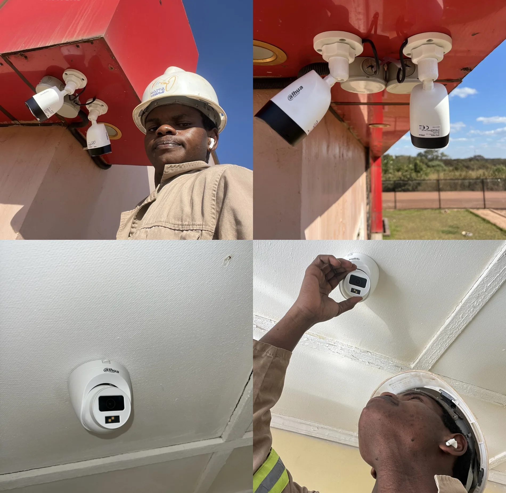
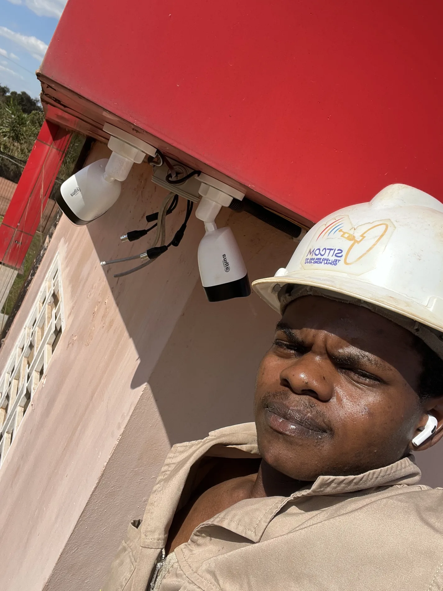
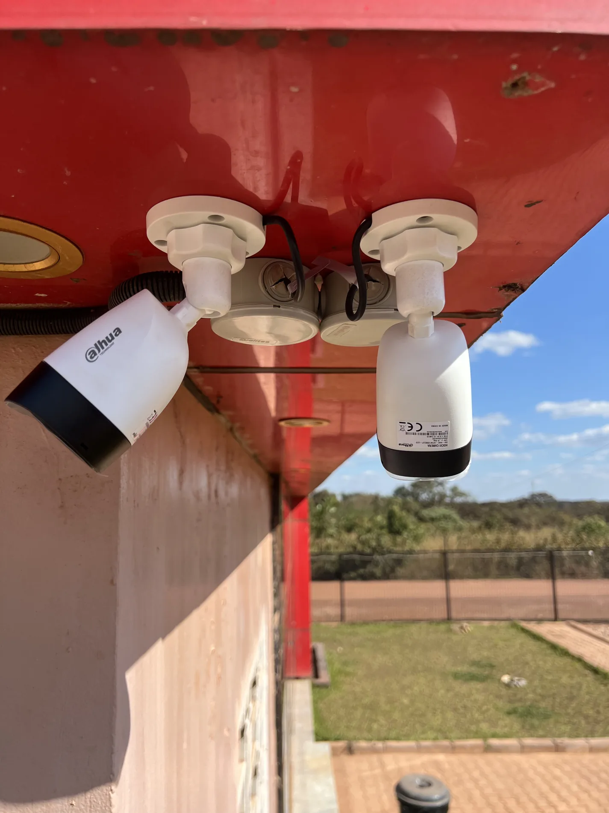
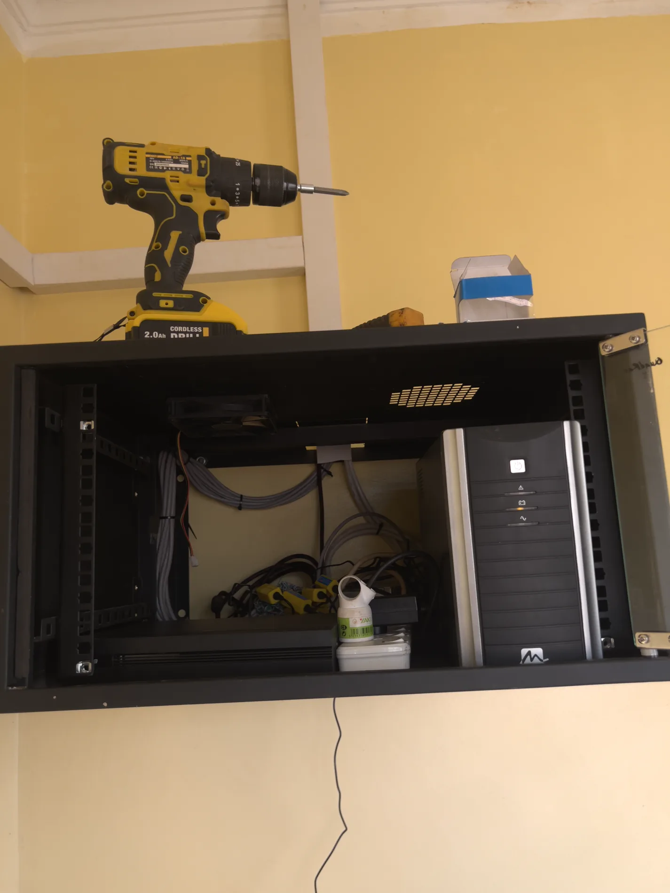
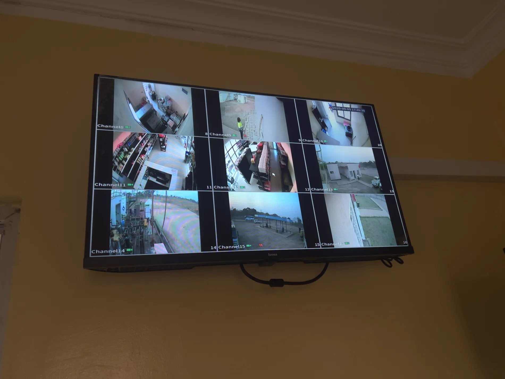

Securité technique
Installation et vérification de systèmes de vidéosurveillance
Documentation d'un projet orienté securité, câblage, positionnement des équipements, contrôle des angles de couverture et validation du fonctionnement des caméras.




